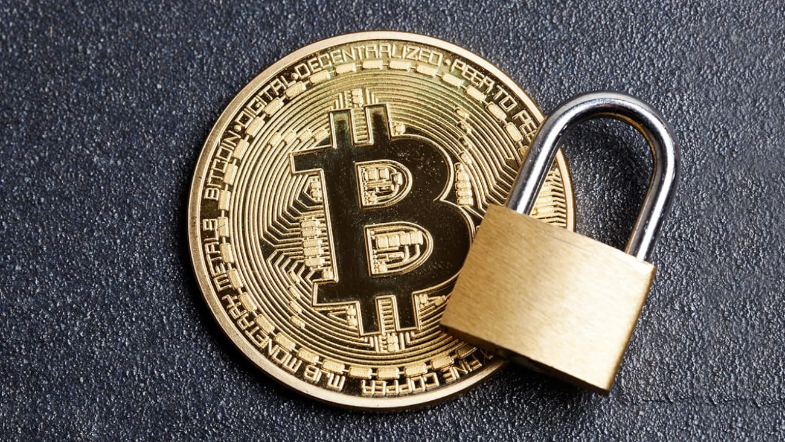

¿Son los Bitcoin seguros?
A día de hoy, como método de pago los Bitcoin son seguros y privados, aunque todavía no son aceptados en la mayoría de grandes plataformas. Por lo tanto, si quieres comprar algunos Bitcoin para hacer una compra privada con ellos, podríamos decir que sí, son seguros. Pero si quieres utilizarlos para forrarte comprándolos baratos y vendiéndolos caros, entonces no, no es un activo financiero seguro. No es conveniente jugar a su compraventa si no entiendes perfectamente cómo funciona este juego, ya que su valor puede desplomarse sin previo aviso en cualquier momento, y puedes perder casi todo tu dinero... o puedes tener que esperar meses u años para que el valor de venta sea el mismo que el de compra.
